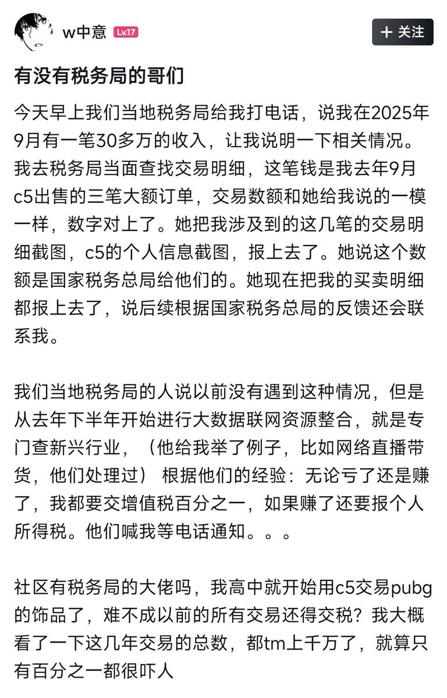
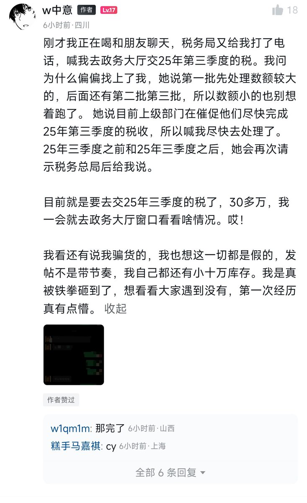
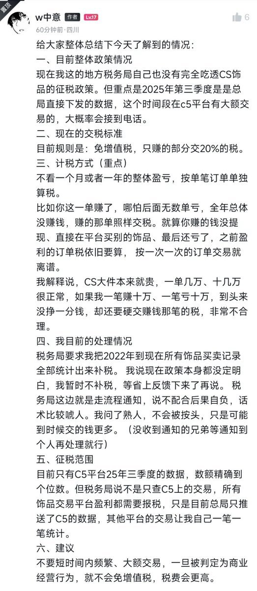
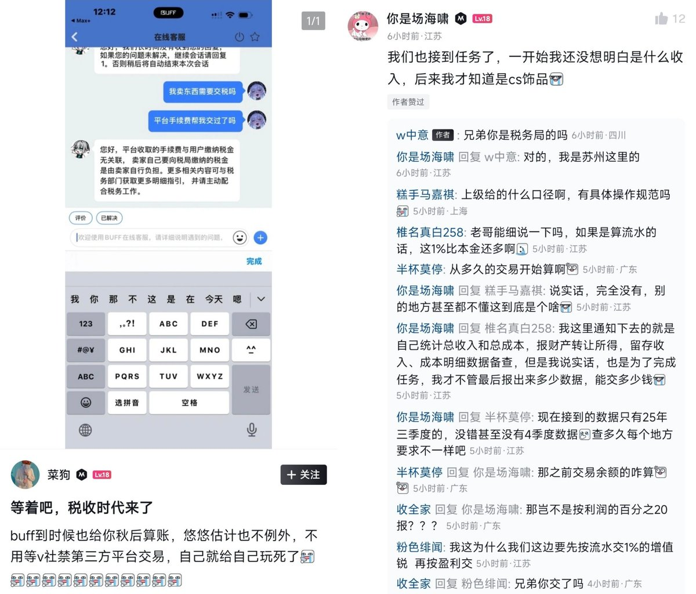

奶昔🥤
@realNyarime
Steam倒爷变倒狗？小黑盒上有用户发帖称自己在C5GAME（一个CS饰品交易平台）上的大额交易被税务局要求补税
说是先查C5平台2025第三季度收入超30w的，收1%增值税、盈利部分额外交20%
无敌了孩子，别人大A输了都不收税，你CS饰品输了收税🤣🤣🤣




奶昔🥤
@realNyarime
还在CS市场当倒狗？？？
小黑盒上有用户发帖称自己在C5GAME（一个CS饰品交易平台）上的大额交易被税务局要求补税
无敌了孩子，别人大a输了都不收税，你CS饰品输了收税 https://t.co/3zI81Xtm96